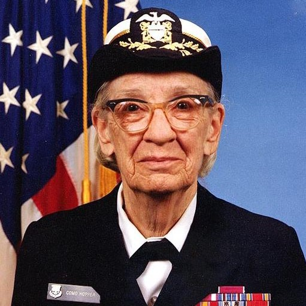

 Grace Hopper was a pioneering American computer scientist and U.S. Navy Rear Admiral whose revolutionary impact reshaped the future of technology. She invented the first compiler and co-developed COBOL, a programming language that allowed people to write commands in English-like code instead of machine language — making computers more accessible to the world. Her work simplified programming, expanded the reach of computing, and laid the foundation for modern software development. A fierce advocate for machine-independent languages, Hopper received numerous honors, including the Presidential Medal of Freedom, and remains an iconic figure whose legacy continues to inspire generations of women in tech.
Grace Hopper was a pioneering American computer scientist and U.S. Navy Rear Admiral whose revolutionary impact reshaped the future of technology. Born Grace Brewster Murray in New York City on December 9, 1906, she grew up in a household that encouraged intellectual curiosity and independence. Her father believed in equal education for his daughters, and her mother, who had studied geometry, nurtured Grace’s love of mathematics. As a child, she famously dismantled alarm clocks to understand how they worked — a sign of the curiosity that would define her career. Hopper earned her bachelor’s degree in mathematics and physics from Vassar College in 1928, graduating Phi Beta Kappa. She went on to receive a master’s degree in mathematics from Yale University in 1930 and completed her PhD in mathematics there in 1934 — a rare achievement for women at the time. While pursuing her doctorate, she taught mathematics at Vassar, blending academic rigor with mentorship. Her contributions to computer science were groundbreaking. Hopper invented the first compiler, a tool that translated human-readable code into machine language, and co-developed COBOL, a programming language that allowed programmers to write commands in English-like syntax. This innovation made computers more accessible and broadened their user base, laying the foundation for modern software development. She was also a fierce advocate for machine-independent programming languages, which helped standardize computing across platforms. Throughout her career, Hopper received numerous awards and honors, including the Presidential Medal of Freedom. She remains an iconic figure in computing history, celebrated not only for her technical achievements but also for her visionary leadership and mentorship. Her legacy continues to inspire generations of women in technology and serves as a reminder that curiosity, courage, and clarity can change the world.
In 1943, Hopper enlisted in the U.S. Navy Reserve at age 37, despite being over the age limit and under the required weight. She was determined to serve and was accepted due to her exceptional academic background. After graduating from Midshipman’s School in 1944, she was assigned to Harvard University’s Cruft Laboratory, where she worked on the Harvard Mark I, one of the earliest electromechanical computers. Hopper became one of the first programmers of the Mark I, contributing to its programming manual and helping the Navy perform complex wartime calculations. Her work during WWII laid the foundation for her lifelong career in computing and military service. After the war, Hopper remained in the Navy Reserve and joined the Eckert–Mauchly Computer Corporation, where she worked on the UNIVAC I, the first commercial computer. In 1952, she developed the first compiler, a tool that translated human-readable instructions into machine code — a revolutionary concept at the time. She later led the development of FLOW-MATIC, the first English-like programming language, which directly influenced the creation of COBOL (Common Business-Oriented Language). COBOL became one of the most widely used programming languages in business and government, and it’s still in use today. Hopper’s military career continued alongside her civilian work. She was recalled to active duty multiple times and eventually became the oldest active-duty officer in the U.S. Navy, retiring in 1986 at age 79 with the rank of Rear Admiral (lower half). She was affectionately nicknamed “Amazing Grace” for her brilliance and tenacity. She received numerous honors, including: - Presidential Medal of Freedom (posthumously awarded in 2016) - Defense Distinguished Service Medal - Legion of Merit - More than 40 honorary degrees Her legacy lives on through the USS Hopper, the Hopper supercomputer, and the annual Grace Hopper Celebration of Women in Computing, which empowers women in tech worldwide.
After retiring as a Rear Admiral (lower half), Hopper transitioned into civilian life with the same energy and purpose that defined her military service. She became a senior consultant at Digital Equipment Corporation, where she continued to advocate for innovation in computing and mentored young engineers. Known for her engaging lectures and visual teaching aids — like her famous “nanosecond wires” — she traveled widely, inspiring audiences with her wit, clarity, and vision. Even in retirement, Hopper remained a powerful voice in tech, pushing for user-friendly programming and machine-independent languages. She received numerous accolades, including over 40 honorary degrees and the National Medal of Technology. In 1992, she passed away at age 85 and was buried with full military honors at Arlington National Cemetery. Her legacy lives on through the USS Hopper, the Hopper supercomputer, and the annual Grace Hopper Celebration of Women in Computing, which continues to empower and connect women in tech around the world.
Grace Hopper’s 1982 lecture “Future Possibilities: Data, Hardware, Software, and People” was a visionary talk delivered to the NSA workforce, where she predicted the evolution of computing and emphasized the human element behind technological progress. Lecture was recovered and released to the world. You can watch in the two parts below.
The Grace Hopper Celebration (GHC), hosted by AnitaB.org, is the world’s largest gathering of women and nonbinary technologists. The 2025 event will take place November 4–7 in Chicago, marking its 25th anniversary with the theme “Unbound.”
For more details, visit GHC 2025